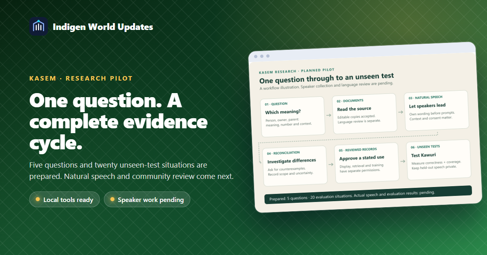
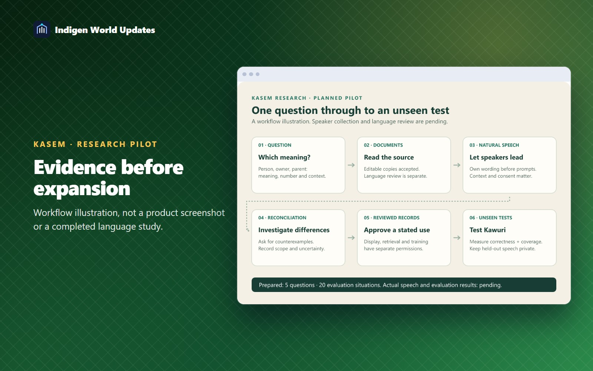

Indigen World has prepared a small Kasem research pilot that follows a question all the way from documentary evidence to natural speech, review and unseen tests. The next milestone is to complete that cycle before expanding collection or preparing a model-training run.

The first pilot asks how speakers distinguish a person, an owner, someone who lives in a house, a mother, a parent and a caregiver. Number, construction and situation may change the wording. We will investigate those differences rather than assume that one English word has one Kasem equivalent.
Five question groups and twenty evaluation situations are prepared. These are workload targets, not a promise of general Kasem fluency or an estimate of how much data a model needs.
Speakers will describe familiar situations independently, using their own words. Researchers will ask about candidate forms afterward. The record should preserve the utterance, its explanation, the situation, the speaker's variety and, when consented, a recording. “Unsure” is a useful answer. Different legitimate variants should remain visible.
Francis confirms purpose, priorities, contributor relationships and cultural access. Researchers bring concrete questions, inspect sources and prepare review packets. Qualified language reviewers assess meaning, spelling and grammatical scope. Appropriate knowledge holders assess cultural accounts within their expertise.

The new local ledger can link a question to separate word senses, constructions, source passages and current reviewed sentence evidence. It preserves exact spellings and records uncertainty. On 12 October, the user authorised the editable books as documentary sources. Four target passages were checked directly against the matching Word files. Those checks are labelled as editable-source checks; the records remain candidates for language review.
Display, AI retrieval and model training have separate permissions. A local projection contains only records that pass the relevant review and permission checks. Held-out examples and their connected families are withheld from retrieval. Editing a research file does not replace the application's existing authenticated review process.
The repository now contains a research-cycle contract, a five-question pilot, a packet generator and deterministic checks. Researchers can prepare separate open-elicitation and follow-up packets, inspect progress, and prepare a reviewed local projection. These are local engineering tools, not a new contributor screen or a change deployed to live Kawuri.
Software tests use synthetic language fixtures. The actual cycle still needs natural speech, permissions, scoped reconciliation and independently reviewed answers to unseen situations. A Kasem-specific documentary account of situational register remains an open research gap. Correctness and coverage will be measured separately: abstaining on every question cannot count as success. A fabricated source or systematic confusion between the target meanings blocks the pilot gate.
Speakers and reviewers benefit from smaller, clearer tasks. Researchers can show which evidence supports a record and what remains unresolved. The community benefits when preserved knowledge comes with its context and appropriate permission.
Availability: local tooling prepared on 11 October 2026 and updated with editable-source checks on 12 October. No production database audit, corpus publication, live Kawuri evaluation, model training, contributor messaging or external article publication is claimed.